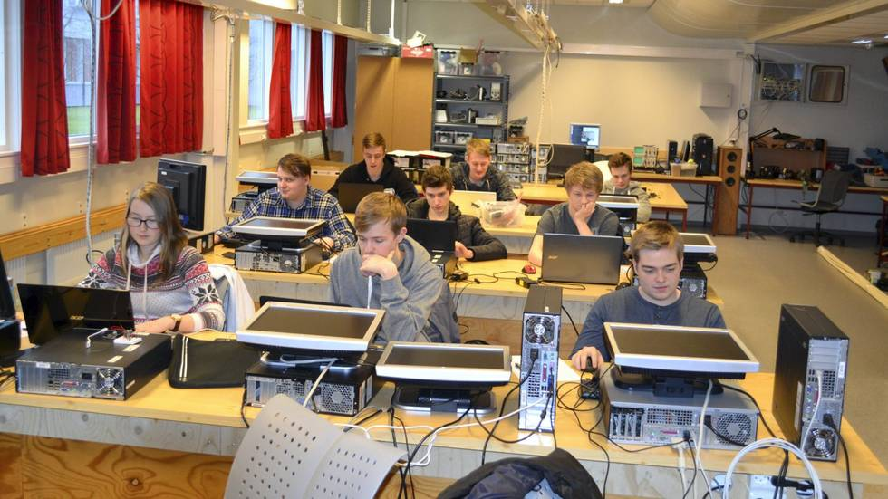

Hjem side
Liste over alle fagene jeg har på katta
Data & elektronikk systemer
Kontakt informasjon om meg
Liste over alle faggene jeg har på katta

På VG2 Data og Elektronikk ved Hamar Katedraskole så har jeg disse fagene:
Data og Elektronikksystemer
Elektronisk Infrastruktur
Yrkesfaglig Fordypning
Engelsk
Kroppsøving
Norsk
Samfunnsfag